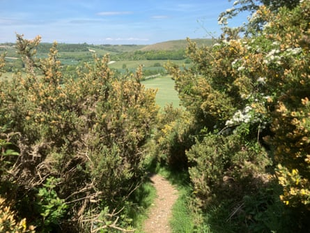

A way from where arable fields have enriched the down to coarse grasses, meadow anthills are floriferous pillows, pimpling the smoothness. On them, strange, wrecked prizes are arranged: eggshells; the light, keeled sternum of a pheasant; a stripped, raw‑red bone; a jewel-bright French partridge’s head, topping the beads of its neck vertebrae like an umbrella handle, or a brooch, pretty and gruesome.
As far as the eye can see, shooting estate borders shooting estate. Skylarks, linnets, yellowhammers and whitethroats sing, but by far the most numerous birds are pheasants, followed by corvids; and this year’s gamebirds haven’t yet been released for winter’s shooting.
The corvids have utilised the anthills – blooming softly with the tiny flowers of wild thyme, chalk eyebright and milkwort, squinancywort and fairy flax – as dining tables. A broody mothering has been bred out of hen pheasants; most lay their eggs and walk away, as if discarding a broken heel.
Gorse bushes on the North Wessex Downs, Hampshire.Photograph: Nicola Chester
Rooks, crows, ravens and jackdaws congregate, carrying eggs to the anthills to break open and eat. But here are other eggshells, too, because these eggs draw attention to other ground-nesting birds. I miserably spot grey partridge and lapwing eggs among them.
This is new. Birds remaining after the shoot season ends in February, are no longer caught up, penned and bred from. Left to their fate, more run free than ever before in spring and summer, with a new batch bought in from UK breeders, or imported each year, instead. Cumulatively, they attract more predators, which then predate other wildlife.
In the wood, feathered, skeletal pairs of wings turn slowly in the branches like hapless angels, where the remains of pheasants have been taken and dropped by red kites. On gateposts, other grisly offerings: the sawn-off foreleg of a deer and a pheasant pelvis and legs posed in grim puppetry, to ride a saddle cloth patch of weathered deer hide.
This danse macabre is unlikely to be the craftwork of the gamekeeper – or deer stalker that part-butchers the animals in the field – but that of a dog walker, whose pet has found treasure in the undergrowth and tried to bring it home. The folk horror is real.